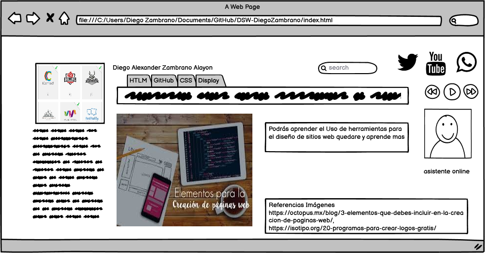

Propiedades básicas de CSS, Display: inline, block, inline-block
Objetivo General
Aprender y crear un OVI para el curso de diseño de sitios webusar las
herramientas del CSS, además de aprender a usar el display,
esto en el fin de tener conocimiento de cómo usar las propiedades de k CSS y
también del uso de correcto de inline, block y también el inline-block
Objetivos Especificos
- Uso de las herramientas o propiedades del CSS, esto para entender el uso de css y cómo se maneja.
- Saber cómo se maneja el display, tener el control del manejo del inline como funciona y block
aparte tener en cuenta como tener la propiedad de inline-block
- De igual manera aprender el uso adecuado de, GitHub y GIT las estructuras de HTML5,
los contenidos de HTML y CSS3 y sus estilos
Materiales
- Sobre Display
https://www.youtube.com/watch?v=rJp3IWsk_os
- Propiedades de CSS
https://www.laurachuburu.com.ar/tutoriales/propiedades-css.php
Contenido
propiedades del CSS
Realmente son muchas, pero resumiré con algunas de las principales y que son más comunes.
Font-familia:
esta define la familia tipográfica
Font-size:
esta es propiedad e tamaño de la fuente se puede escribir en pixels o en ems. “el tamaño
predeterminado es de 16px es decir 1em=16px”
Color:
define el color de la fuente se usa Hexadecimal , #ff0000 = rojo, nombre como black o red. RGB que
permite agregar las trasparencias
Width:
esto define el ancho del elemento a agregar eso en pixels, ems o porcentaje
Margin:
Es la distancia de los elementos
Border:
es la definición dl borde su estilo color y grosor
Background:
esto es el fondo de un objeto como una imagen un color.
Para que es el Display.
Hay barias formas de usar el Dispaly, para esto hay que entender cómo funciona el inline, block y inline-block.
Display: Block, estos elementos vienes por defecto en bloque es decir son elementos en bloque.
Display: Inline,estos elementos que están en línea es decir todo lo contario de block.
Display: Inline-Block, esto une los 2 anteriores poniendo objetos en línea, pero manteniendo el bloque según su propiedad.
Maquetacion o Mockup
